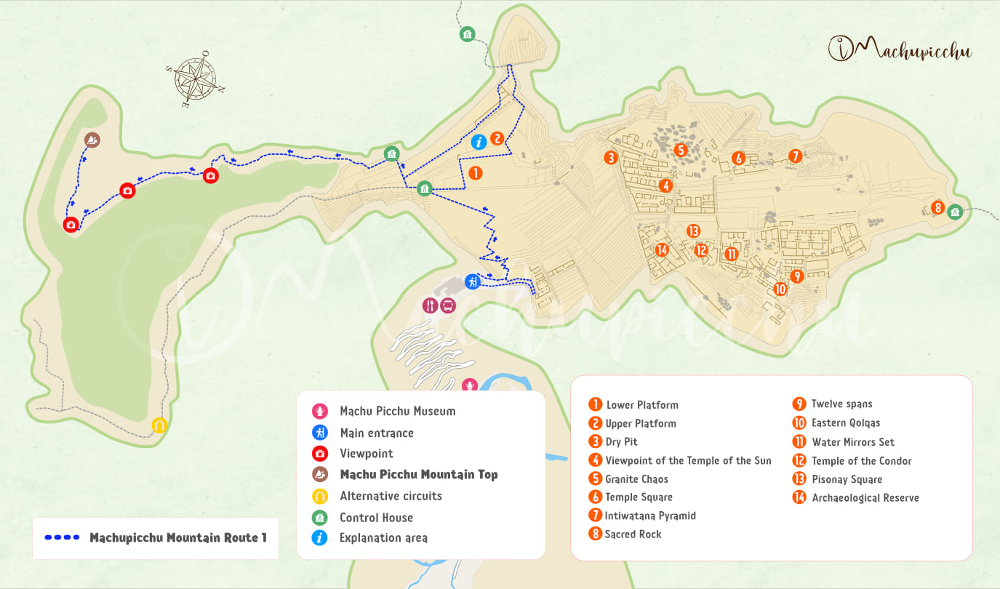
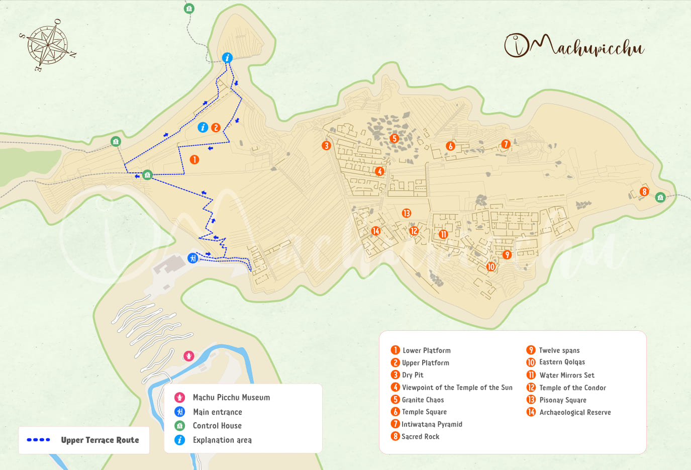
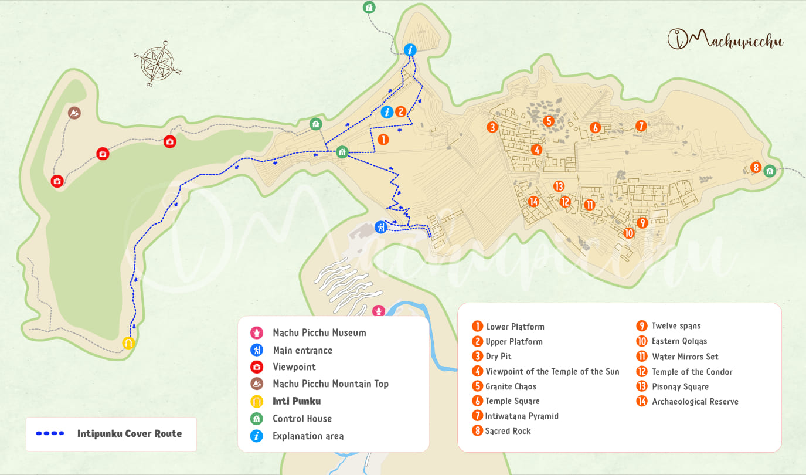
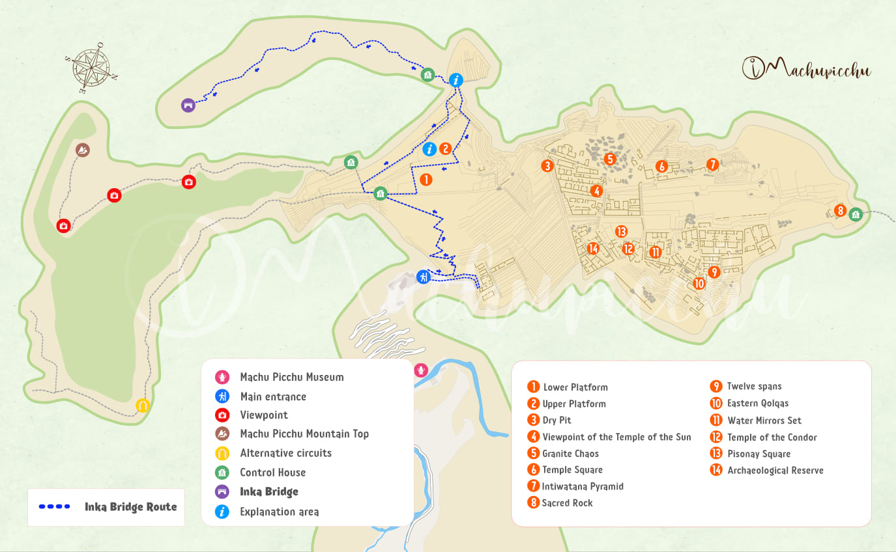
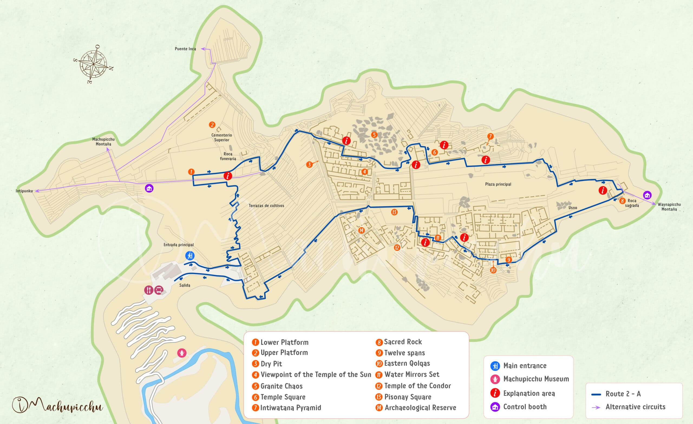
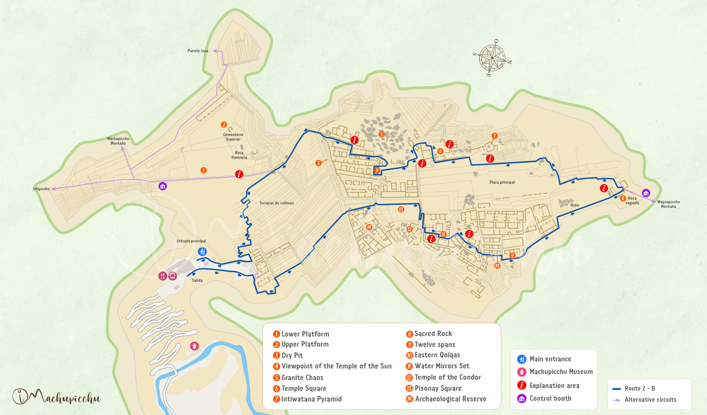
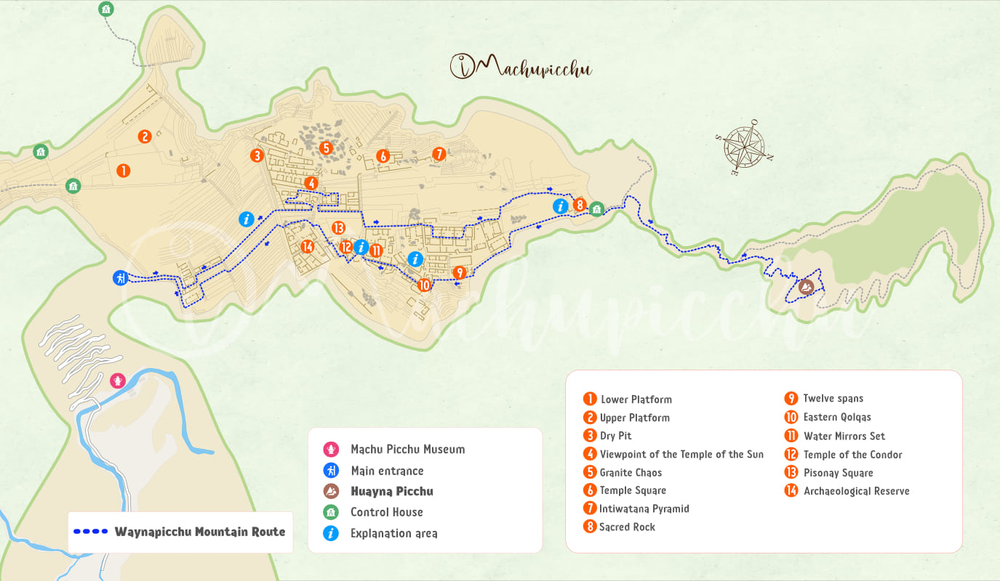
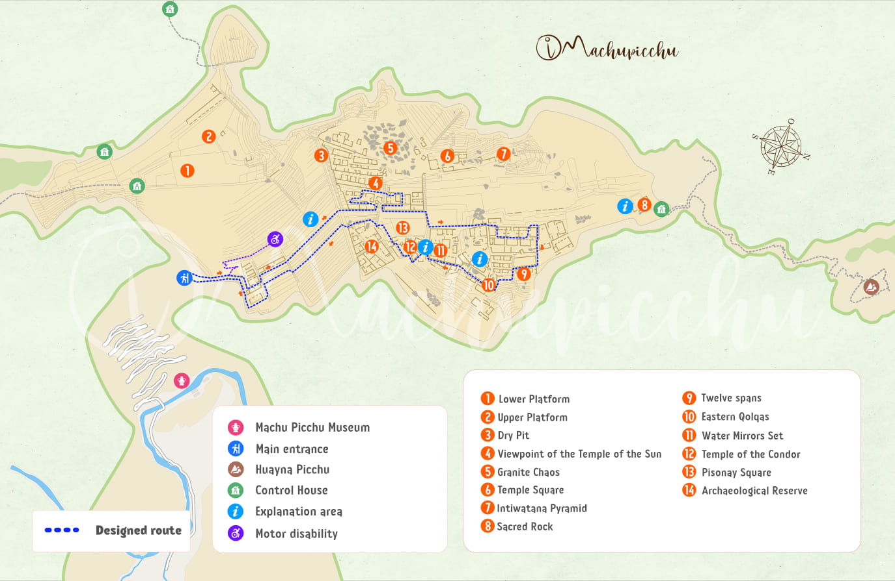
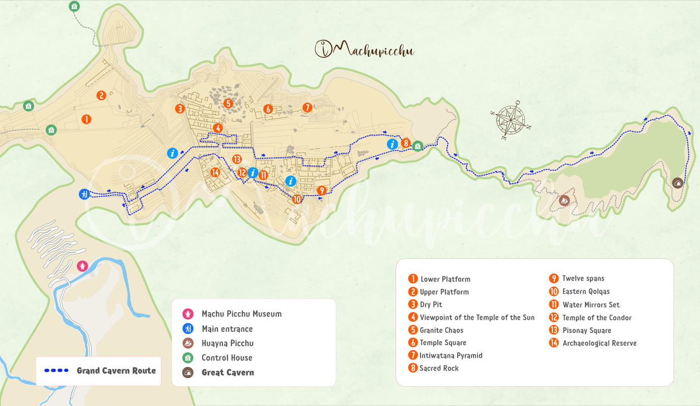

Step-by-Step Reservation Process
Step 1: Select the circuit from the dropdown menu under "Route"
The circuits are unique routes through Machu Picchu that allow you to experience different important places in the citadel. Options also include additional treks up the 3 peaks, Wayna Picchu (Huayna Picchu), Machu Picchu Mountain, Huchuy Picchu, or the Temple of the Moon cave.
You can find detailed Inca Trail Trekking and Machu Picchu circuit route information at ticketmachupicchu.com
Circuit Route Maps (Click to Enlarge)

Circuit 1-A (Panoramic)
Machu Picchu Mountain Route
Includes the classic photo from the Guardian's House and a hike up Machu Picchu Mountain. Allows panoramic views but no access to urban sectors.

Circuit 1-B (Panoramic)
Upper Terrace Route
The basic ticket for the classic postcard photo from the Guardian's House. Ideal for those who just want the view. No access to lower urban structures.

Circuit 1-C (Panoramic)
Intipunku (Sun Gate) Route
Includes the classic photo from the Guardian's House and a hike to the Sun Gate (Intipunku). Available during High Season only.

Circuit 1-D (Panoramic)
Inka Bridge Route
Includes the classic photo from the Guardian's House and a short hike to the Inca Bridge. Available during High Season only.

Circuit 2-A (Classic)
Designed Classic Route
The most comprehensive tour. Includes the classic photo (from a slightly lower platform) and a full tour of the urban and religious sectors.

Circuit 2-B (Classic)
Lower Terrace Route
Similar to 2-A but the classic photo is taken from the lower terrace. Includes full access to the main temples and urban areas.

Circuit 3-A (Royal)
Huayna Picchu Route
Visits the lower "Royal" part of the city and includes the adventurous hike up Huayna Picchu Mountain. Age restriction: 12+.

Circuit 3-B (Royal)
Designed Royalty Route
Focuses on the lower "Royal" and agricultural sectors. Does not include the classic high-view photo or mountain hikes.

Circuit 3-C (Royal)
Great Cavern Route
Visits the lower "Royal" sector and includes a hike to the Great Cavern (Temple of the Moon). Available during High Season only.
Step 2: Choose Number of Permits
Select the number of permits you need (up to a maximum of 10).
Step 3: Select Start Date
Choose the date you want to start the trek.
Step 4: Enter Personal Info
Enter your personal and emergency contact information.
Step 5: Review Terms
Review the terms and conditions and agree to them.
Step 6: Payment
Make the payment using a credit or debit card. It's important to note that the Inca Trail permit fee is non-refundable, so be sure to double-check your reservation details before finalizing the booking.
Preparing for the Trek
Once you have your permit, you'll need to start preparing for the trek. The Inca Trail is a physically demanding hike that requires a good level of fitness and preparation. It's recommended that you train beforehand by walking or hiking.
It's also important to choose a reputable trekking agency to guide you on the Inca Trail. Look for an agency that has experience leading treks on the Inca Trail and can provide all necessary equipment and support. A good trekking agency will also have a knowledgeable guide who can provide insight into the history and culture of the region, as well as ensure that you are safe and well-cared for throughout the trek.
As you make your way along the Inca Trail, you'll be rewarded with breathtaking views of the Andes Mountains and the chance to explore ancient ruins and sites along the way. The trail takes four days to complete, with stops at various campsites along the way. On the final day, you'll reach the iconic Sun Gate, which offers panoramic views of Machu Picchu. The feeling of accomplishment as you gaze upon this ancient wonder is truly indescribable.
The Peru Inca Trail is a once-in-a-lifetime adventure that should not be missed. By following the steps outlined above and preparing properly, you can reserve your spot on the trail and make the most of your journey to Machu Picchu.